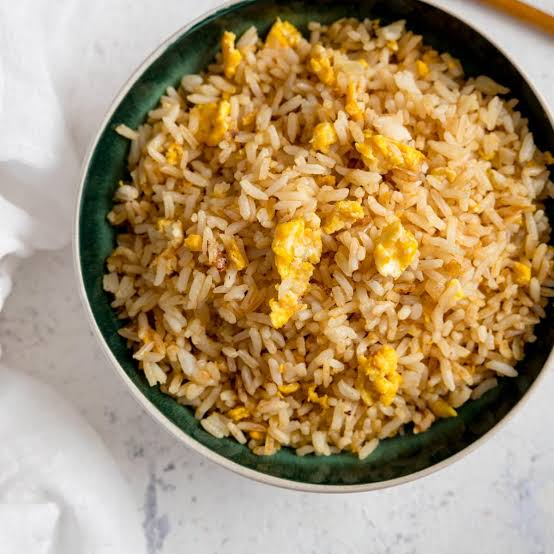

Because it is an easy meal to cook and eat!

-
For cooked rice:
- 3 cups cooked organic rice (white or brown), preferably leftover and previously chilled
- 3-4 tablespoons sesame oil
- Pinch of salt
- ¼ cup sesame seeds
- For cooked eggs:
- 4 eggs
- 2 tablespoons soy sauce
- 1 tsp sesame oil
- 1 garlic clove finely minced
- Optional: chopped green onions, any other cooked veggies or cooked meat
- Prepare egg mixture first by beating eggs, soy sauce and sesame oil together in a small bowl.
- Heat sesame oil in pan on medium-high and add cooked rice. Fry rice until somewhat translucent or at least until hot. Sprinkle salt to taste.
- Turn heat to low and add egg mixture to rice. Stir to coat all rice and continue to stir constantly until all egg is cooked. Once cooked, add sesame seeds and other garnishes if using. Serve.

I hope this recipe helps you all and you enjoy some delicious meal of rice and eggs!